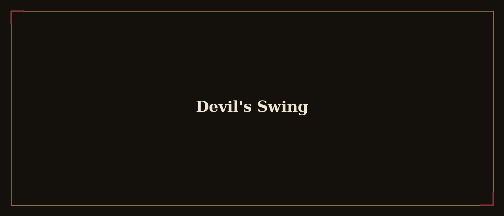

← Back to Other

Devil's Swing
A fan musical crossover between Bendy and the Ink Machine and Hazbin Hotel.
The concept
Devil's Swing merges the inked aesthetic of Bendy and the Ink Machine with the musical tone of Hazbin Hotel, in a crossover built as a musical: characters, musical numbers, and a story arc that draws from both worlds without simply adding them together.
My role
I write the script and structure the musical numbers, while working out how characters from both universes meet without losing what makes each one work.
- Wrote the crossover script
- Structured the musical numbers
- Kept both source universes coherent
The starting question wasn't "what happens when they meet" — it was "what song would they sing together, and why".
Gallery — screenshots & gifs
Crossover moodboard (image)
Script excerpt (screenshot)